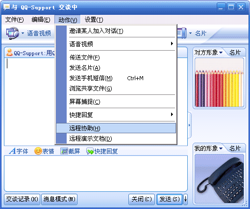
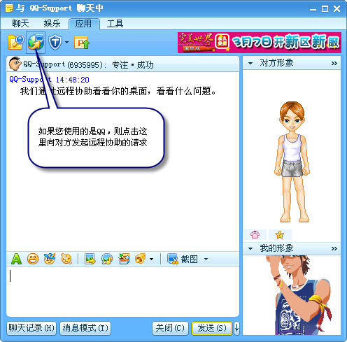
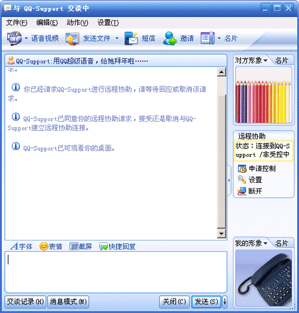
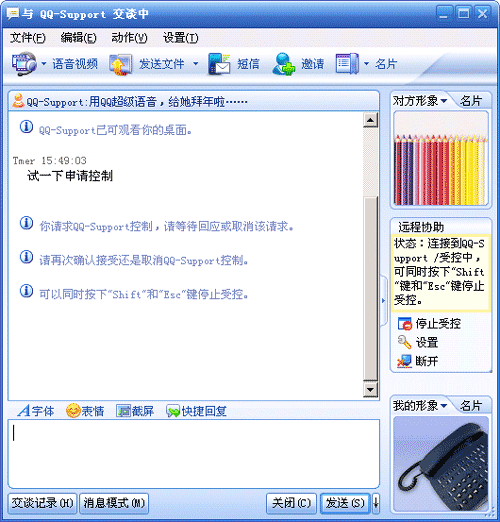
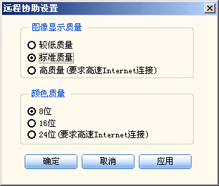
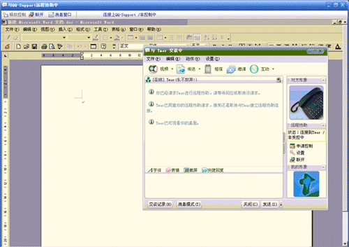

如何利用QQ/TM远程协助?
- 2010-2-17
启动远程协助
在对话窗口中，选择“动作”－>“远程协助”，即可向对方发起远程协助的请求，对方接受后，进入远程协助状态。



远程控制的窗口如图所示，在远程协助中，发起方的桌面状态完全被对方可见。
申请控制
在远程协助过程中，您可以点击 ，即申请由对方控制您的计算机操作。对方接受后，可以通过在与您远程协助的窗口中控制您此时的计算机操作。

在受控状态下，您同时按下“Shift”和“Esc”键停止受控
远程协助设置
在远程协助中，点击 ，可以对远程协助的图像及色彩状况进行设置。

远程控制的窗口如图所示，在远程协助窗口中，发起方的桌面状态完全被对方可见。
